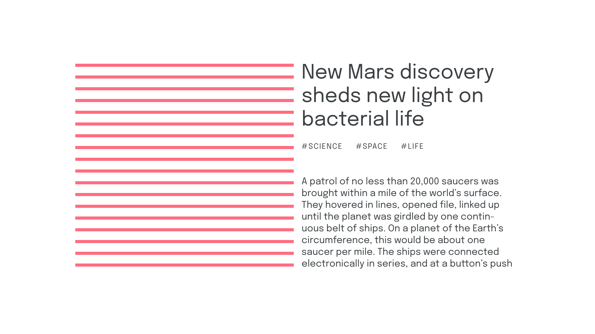

Rhythm
By Google Fonts Knowledge contributors · Google Fonts Knowledge.
Original article · Source on GitHub · CC BY-SA 4.0. Text, illustrations and existing credits reproduced from the licensed Knowledge repository. Open Shelf adapted the layout and links; these adaptations are also CC BY-SA 4.0. No endorsement implied.
Rhythm usually refers to the perceived rhythm that flows through text. That can be through the letterforms of one word—i.e., when discussing the type design itself—or through a block of text—i.e., when discussing the typographic treatment of that text.

Rhythm can be affected by the angle of a letterform’s stroke; the tracking, line height, or measure applied to an entire text block; or almost any typographic parameter imaginable. At its simplest level, a vertical rhythm is implied by line height and the vertical spaces between elements, such as margins and padding values on paragraphs and accompanying headings. Using multiples of a discreet base unit helps us to achieve consistent and logical rhythm.